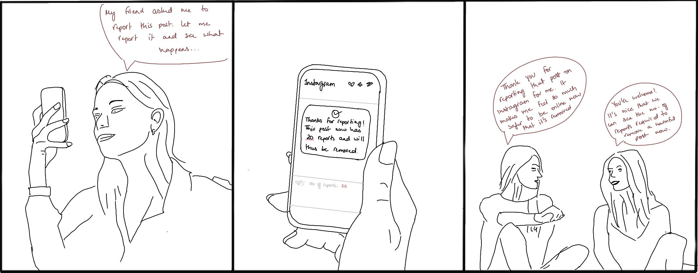
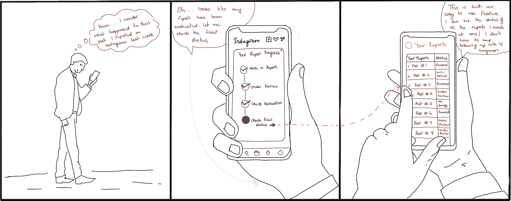
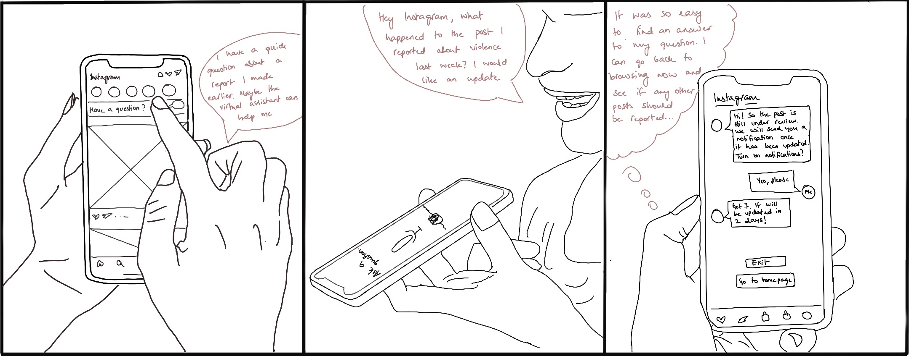
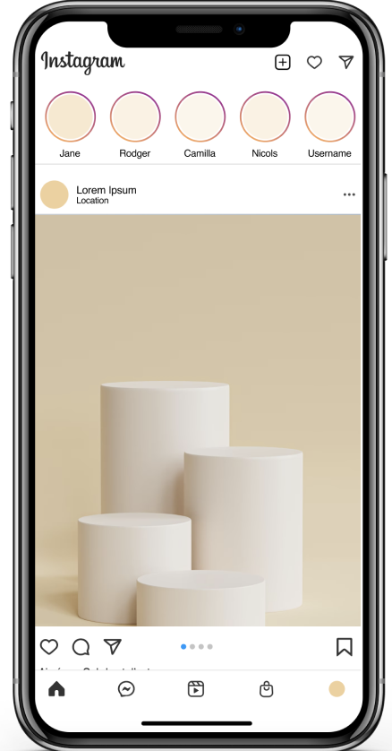
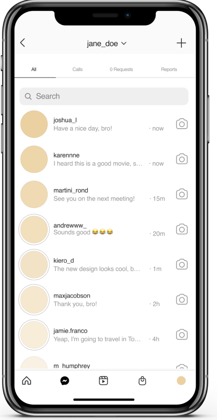
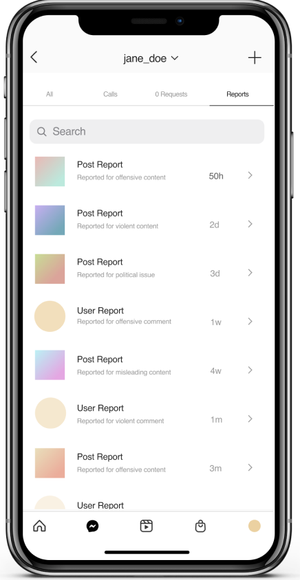
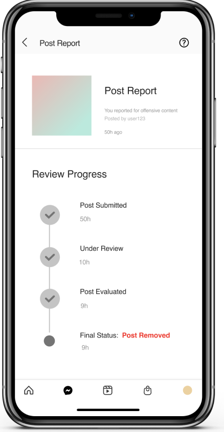

user-centered research & evaluation
Mia Hofmann, Rob Lambeth, David Wang
co-design lead
sept 2021 - dec 2021
The goal of the project is to update the existing Instagram app interface to integrate an easy-to-use post-report feedback and progress that ultimately encourages users to participate in bias auditing.
An in-app integrated progress bar tracker on Instagram that a user can view after making a report as well as a separate ‘inbox’ where they can view all the reports they made in the past.
AI in social media holds the potential to shape how users communicate, consume, and collect digital content. Algorithms can often have biases that affect how users use and experience these platforms. These biases are most effectively monitored by the users. Through our research, we found that the current protocol that allows users to report and monitor algorithmic biases is ineffective. We aimed to design an easy-to-use interface that encourages users to participate in bias auditing.
How might we make social media users more excited to take part in bias bounty programs and perceive it as an opportunity to do good?
We conducted 8 different generative and evaluative research methods to deeply understand people’s perception of social media bias and learn about their motivation in bias auditing. Through analyzing our research, we were able to ideate on potential solutions that might be the most effective.
For the interviews, we prepared a protocol consisting of 3 main tasks and additional research questions for each respective task that was presented to each participant. Our tasks were guided by the overarching goal of learning what kind of incentives and/or motivations
are most effective for encouraging social media users to take part in bias reporting programs. For these given tasks our primary objectives were understanding: 1. how users are presently motivated to report bias on social media 2. what aspects of motivation are missing 3. how users react to different kinds of incentives.
Findings from our speed dating rounds revealed some surprising results.
Overall, users were drawn to solutions that effectively provided more transparency and personalized the
reporting process. Our findings led us to one key insights for moving forward:
1. The majority of our hypothesized user needs were validated; need #3 was not confirmed
Our speed dating findings contradicted our initial hypothesis that users desire “the feeling of
receiving live, real time help” (Need 3). However, our other hypothesized needs were largely confirmed:
Need 1 — Users need a feeling of encouragement and validation to report
Need 2 — Users want to get more detail about what will happen as a result of a report
Need 4 — Users want an easy way to find status of reports in one place.
idea 1: post-report feedback with number of reports on post
idea 2: post-report progress bar fedeback on each report
idea 3: real-time virtual chatbot that answers all queries
Given our insights, we decided to redesign the post-report feedback interface of Instagram. The design consists of a progress bar tracker that the user can view after making a report as well as a separate ‘inbox’ where they can view all the reports they made in the past. The progress bar shows the following stages: post submitted -> under review -> post evaluated -> final status. Through these features, users have increased transparency and control over the reporting process, thereby encouraging future participation in bias auditing.
home page
general inbox
report inbox
progress report
Overall, I feel like our research methods reveals many valuable insights that helped us develop our final prototype. Often, the findings from the various research methods were hard to synthesis but we were able to collectively discuss them together and come up with ideas that seemed to align with our main takeaways. If we were given more time, I would have liked to think deeper about how to create more value for users as well as the Instagram platform.